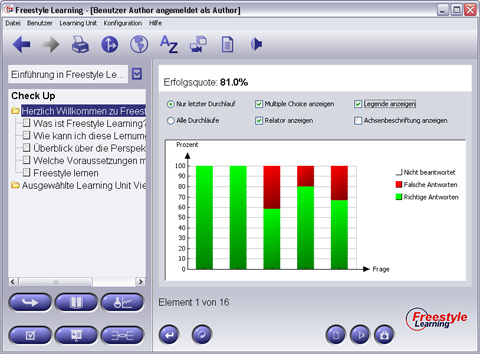

Im Evaluationsmodus werden in einem Balkendiagram für jede beantwortete Frage die erzielten Resultate als prozentuale Erfolgsquote dargestellt. Jeder Balken repräsentiert die Fragen der selektierten Knoten aus dem Strukturbaum. Solange keine Frage beantwortet wurde, wird der spezifische Balken in leichtem Grau dargestellt. In dem oberen Bereich des Anzeigebereichs wird Ihnen Ihre gesamte Erfolgsquote in Prozent dagestellt. Die Legende des Balkendiagrams und die Achsenbeschriftungen der Balken können Sie aktivieren bzw. deaktivieren. Ferner können Sie entscheiden, ob Sie die Resultate des letzen Durchlaufs oder die gesamte prozentuale Quote aller Durchläufe sehen möchten. Die Daten des Evaluation Modus werden individuell für jeden Benutzer und jede Learning Unit aufgezeichnet.

View-spezifische Interaktions-Schaltflächen
| Hostorie löschen | Löscht die gespeicherten Ergebnisse der Historie | |
| Beenden | Evaluationsmodus beenden |
Zurück zur Hauptseite